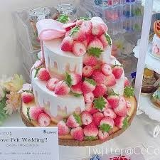

7月29日
可愛い形ケーキ
まず初めにご紹介するのは、「ルワンジュ東京」です。六本木駅より徒歩3分ほどのところにあります。テイクアウトのみで、店内でケーキを召し上がることはできません。しかし、平日は夜遅くまで営業しているので、仕事帰りでも気軽に寄ることができるのが嬉しいですよね。
ルワンジュ東京では、たくさんの可愛らしいケーキやスイーツを販売しています。絶対に自分では作ることのできないデザインの可愛いケーキやマカロン、チョコレートがあります。オンラインショップでの販売も行っているので、遠くに住んでいる方も気軽にルワンジュ東京のスイーツを買うことができるのが嬉しいですよね。
テイクアウトで、世界に一つだけの可愛いオーダーメイドのケーキを受け取ることもできます。自分で一から全てオーダーする自信がないという方のためにも、セミオーダーのケーキを注文することができるのが嬉しいです。オーダーケーキを作りたい場合は、早めに準備をしておいた方が安心です。